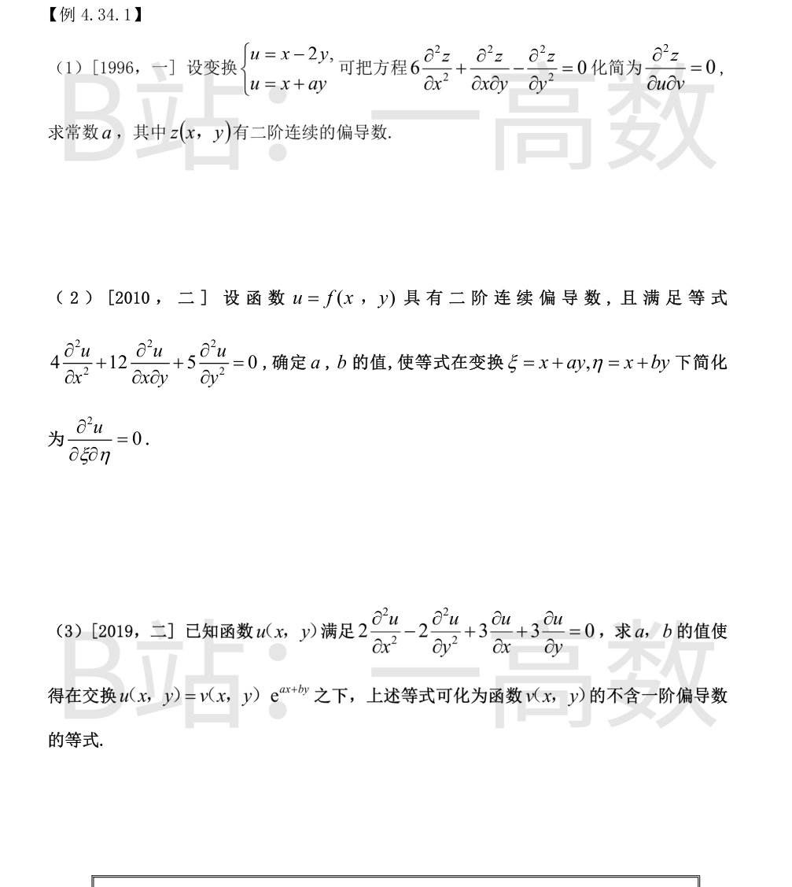
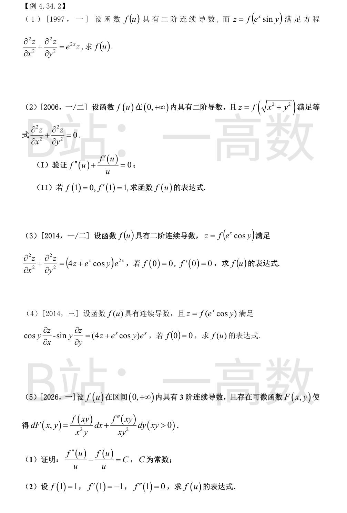
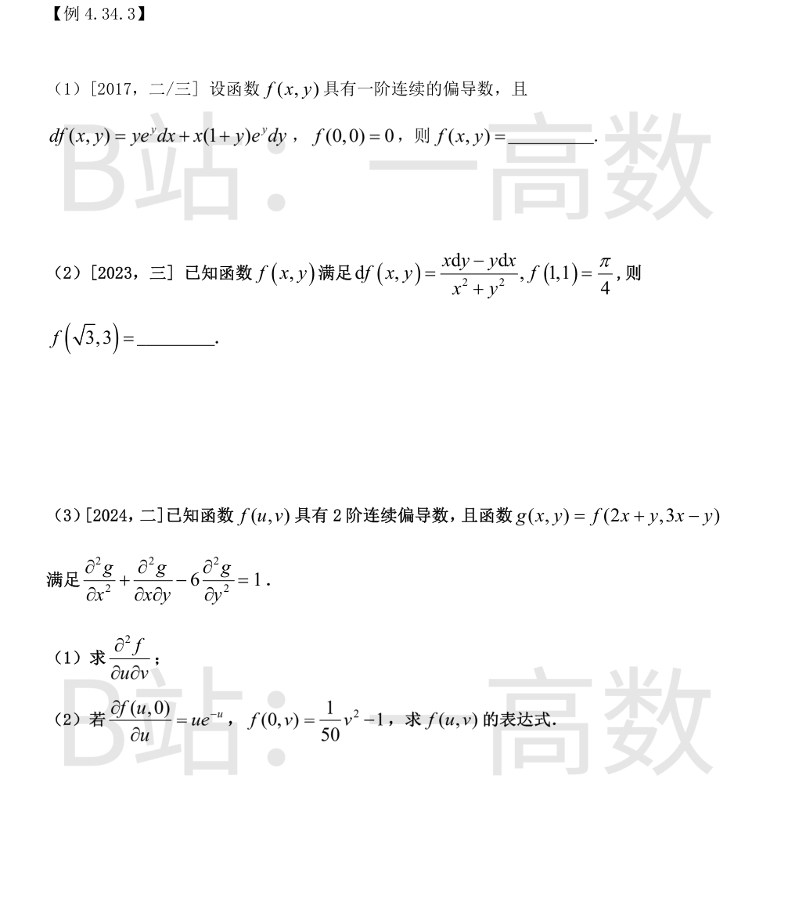

由复合求导（$u_y=-2,\ v_y=a$）：
$$z_x=z_u+z_v,\qquad z_y=-2z_u+az_v$$
$$z_{xx}=z_{uu}+2z_{uv}+z_{vv},\qquad z_{xy}=-2z_{uu}+(a-2)z_{uv}+az_{vv},\qquad z_{yy}=4z_{uu}-4az_{uv}+a^2z_{vv}$$
代入原方程：
$$6z_{xx}+z_{xy}-z_{yy}=(6-2-4)z_{uu}+(12+a-2+4a)z_{uv}+(6+a-a^2)z_{vv}=(10+5a)z_{uv}+(6+a-a^2)z_{vv}$$
要化为 $z_{uv}=0$ 型，须 $6+a-a^2=0$，解得 $a=3$ 或 $a=-2$。
又变换必须可逆：$\dfrac{\partial(u,v)}{\partial(x,y)}=1\cdot a-1\cdot(-2)=a+2\neq0$，故 $a\neq-2$，只能 $a=3$。
检验：$a=3$ 时 $z_{uv}$ 系数 $10+5a=25\neq0$，方程确化为 $25z_{uv}=0$，即 $z_{uv}=0$。
由 $\xi=x+ay,\ \eta=x+by$（$u_x=u_\xi+u_\eta,\ u_y=au_\xi+bu_\eta$）：
$$u_{xx}=u_{\xi\xi}+2u_{\xi\eta}+u_{\eta\eta},\qquad u_{xy}=au_{\xi\xi}+(a+b)u_{\xi\eta}+bu_{\eta\eta},\qquad u_{yy}=a^2u_{\xi\xi}+2ab\,u_{\xi\eta}+b^2u_{\eta\eta}$$
代入：
$$4u_{xx}+12u_{xy}+5u_{yy}=(4+12a+5a^2)u_{\xi\xi}+(8+12a+12b+10ab)u_{\xi\eta}+(4+12b+5b^2)u_{\eta\eta}$$
令 $5t^2+12t+4=0$，得 $t=\dfrac{-12\pm8}{10}$，即 $t=-2$ 或 $t=-\dfrac25$。
故 $a,b$ 只能取 $-2$ 与 $-\dfrac25$ 且 $a\neq b$（否则变换退化）。取 $a=-2,\ b=-\dfrac25$，检验交叉项系数：
$$8+12\left(-2-\frac25\right)+10\cdot\frac45=8-\frac{144}{5}+8=-\frac{64}{5}\neq0$$
方程确化为 $-\dfrac{64}{5}u_{\xi\eta}=0$，即 $u_{\xi\eta}=0$。
设 $u=ve^{ax+by}$，则
$$u_x=e^{ax+by}(v_x+av),\qquad u_y=e^{ax+by}(v_y+bv)$$
$$u_{xx}=e^{ax+by}(v_{xx}+2av_x+a^2v),\qquad u_{yy}=e^{ax+by}(v_{yy}+2bv_y+b^2v)$$
代入原方程并除以 $e^{ax+by}$：
$$2v_{xx}-2v_{yy}+(4a+3)v_x+(3-4b)v_y+(2a^2-2b^2+3a+3b)v=0$$
不含一阶偏导数要求：
$$4a+3=0\Rightarrow a=-\frac34,\qquad 3-4b=0\Rightarrow b=\frac34$$
此时常数项 $2a^2-2b^2+3a+3b=\dfrac{9}{8}-\dfrac{9}{8}-\dfrac94+\dfrac94=0$，方程化为 $2v_{xx}-2v_{yy}=0$。

记 $u=e^x\sin y$：$u_x=e^x\sin y,\ u_y=e^x\cos y$。
$$z_x=f'(u)e^x\sin y,\qquad z_y=f'(u)e^x\cos y$$
$$z_{xx}=f''(u)e^{2x}\sin^2y+f'(u)e^x\sin y,\qquad z_{yy}=f''(u)e^{2x}\cos^2y-f'(u)e^x\sin y$$
相加（$f'$ 项抵消）：
$$z_{xx}+z_{yy}=e^{2x}f''(u)$$
方程化为 $e^{2x}f''(u)=e^{2x}f(u)$，即 $f''(u)-f(u)=0$，通解
$$f(u)=C_1e^{u}+C_2e^{-u}$$
记 $u=\sqrt{x^2+y^2}$，则 $u_x=\dfrac{x}{u},\ u_y=\dfrac{y}{u}$。
$$z_x=f'(u)\frac{x}{u},\qquad z_{xx}=f''(u)\frac{x^2}{u^2}+f'(u)\left(\frac1u-\frac{x^2}{u^3}\right)$$
由对称性 $z_{yy}=f''(u)\dfrac{y^2}{u^2}+f'(u)\left(\dfrac1u-\dfrac{y^2}{u^3}\right)$，相加（$x^2+y^2=u^2$）：
$$z_{xx}+z_{yy}=f''(u)\cdot1+f'\left(\frac2u-\frac{u^2}{u^3}\right)=f''(u)+\frac{f'(u)}{u}$$
(Ⅰ) 由方程 $z_{xx}+z_{yy}=0$ 即得 $f''(u)+\dfrac{f'(u)}{u}=0$，得证。
(Ⅱ) 令 $g=f'$，则 $g'+\dfrac{g}{u}=0\Rightarrow(ug)'=0\Rightarrow g=\dfrac{C_1}{u}$，即 $f'=\dfrac{C_1}{u}$。
积分：$f=C_1\ln u+C_2$。由 $f'(1)=\dfrac{C_1}{1}=1\Rightarrow C_1=1$；由 $f(1)=C_2=0$。
$$f(u)=\ln u$$
记 $u=e^x\cos y$：$u_x=u,\ u_{xx}=u;\ u_y=-e^x\sin y,\ u_{yy}=-e^x\cos y=-u$，故 $\Delta u=u_{xx}+u_{yy}=0$；又 $u_x^2+u_y^2=e^{2x}(\cos^2y+\sin^2y)=e^{2x}$。
$$z_{xx}+z_{yy}=f''(u)(u_x^2+u_y^2)+f'(u)\Delta u=e^{2x}f''(u)$$
方程化为 $e^{2x}f''(u)=(4f(u)+u)e^{2x}$，即
$$f''(u)-4f(u)=u$$
齐次通解 $C_1e^{2u}+C_2e^{-2u}$；特解试 $Au$：$-4Au=u\Rightarrow A=-\frac14$。故 $f=C_1e^{2u}+C_2e^{-2u}-\dfrac u4$。
由 $f(0)=0$：$C_1+C_2=0$；由 $f'(u)=2C_1e^{2u}-2C_2e^{-2u}-\frac14$ 及 $f'(0)=0$：$2C_1-2C_2-\frac14=0\Rightarrow C_1-C_2=\frac18$。解得 $C_1=\frac1{16},\ C_2=-\frac1{16}$。
$$f(u)=\frac{e^{2u}-e^{-2u}}{16}-\frac{u}{4}$$
（检验：$f''-4f=u$，$f(0)=f'(0)=0$，均满足。）
记 $u=e^x\cos y$：$z_x=f'(u)e^x\cos y,\ z_y=-f'(u)e^x\sin y$。
$$\cos y\,z_x-\sin y\,z_y=f'(u)e^x(\cos^2y+\sin^2y)=e^xf'(u)$$
方程化为 $e^xf'(u)=(4f(u)+u)e^x$，即一阶线性方程
$$f'(u)-4f(u)=u$$
齐次解 $Ce^{4u}$；特解 $Au+B$：$A-4(Au+B)=u\Rightarrow A=-\frac14,\ B=-\frac1{16}$。
故 $f=Ce^{4u}-\frac u4-\frac1{16}$，由 $f(0)=0$：$C=\frac1{16}$。
$$f(u)=\frac{e^{4u}}{16}-\frac{u}{4}-\frac{1}{16}=\frac{e^{4u}-1-4u}{16}$$
(1) 记 $P=\dfrac{f(u)}{x^2y},\ Q=\dfrac{f''(u)}{xy^2},\ u=xy$。由 $dF=P\,dx+Q\,dy$ 且 $f$ 三阶连续可导，有 $\dfrac{\partial P}{\partial y}=\dfrac{\partial Q}{\partial x}$：
$$\frac{\partial P}{\partial y}=\frac{f'(u)}{xy}-\frac{f(u)}{x^2y^2},\qquad \frac{\partial Q}{\partial x}=\frac{f'''(u)}{xy}-\frac{f''(u)}{x^2y^2}$$
（用了 $u_x=y,\ u_y=x$。）两项分别通乘 $x^2y^2=u^2$：
$$u f'(u)-f(u)=u f'''(u)-f''(u)\ \Longrightarrow\ f''(u)-f(u)=u\left[f'''(u)-f'(u)\right]$$
令 $\varphi(u)=\dfrac{f''(u)-f(u)}{u}$，则
$$\varphi'(u)=\frac{u\left[f'''(u)-f'(u)\right]-\left[f''(u)-f(u)\right]}{u^2}=0$$
故 $\varphi(u)\equiv C$，即 $\dfrac{f''(u)-f(u)}{u}=C$。
(2) 代入初值：$C=\dfrac{f''(1)-f(1)}{1}=0-1=-1$，于是 $f''-f=-u$。
齐次通解 $C_1e^u+C_2e^{-u}$，特解 $u$（代入 $0-u=-u$ 成立），故 $f=C_1e^u+C_2e^{-u}+u$。
由 $f(1)=1$：$C_1e+C_2e^{-1}+1=1\Rightarrow C_1e+C_2e^{-1}=0$；
由 $f'(u)=C_1e^u-C_2e^{-u}+1$ 及 $f'(1)=-1$：$C_1e-C_2e^{-1}=-2$。
解得 $C_1e=-1,\ C_2e^{-1}=1$，即 $C_1=-e^{-1},\ C_2=e$。
$$f(u)=u+e^{1-u}-e^{u-1}$$
（检验：$f(1)=1,\ f'(1)=1-2=-1,\ f''(1)=0$，且 $(f''-f)/u=-1$ 恒成立。）

记 $P=ye^y,\ Q=x(1+y)e^y$。可积性：$\dfrac{\partial P}{\partial y}=(1+y)e^y=\dfrac{\partial Q}{\partial x}$。
由 $f_x=ye^y$ 对 $x$ 积分：$f=xye^y+\varphi(y)$。
再求 $f_y=x(1+y)e^y+\varphi'(y)$，与 $Q=x(1+y)e^y$ 比较得 $\varphi'(y)=0$，$\varphi=C$。
由 $f(0,0)=0$ 得 $C=0$，故 $f(x,y)=xye^y$。
熟知 $d\left(\arctan\dfrac{y}{x}\right)=\dfrac{x\,dy-y\,dx}{x^2+y^2}$（$x>0$ 区域），故
$$f(x,y)=\arctan\frac{y}{x}+C$$
由 $f(1,1)=\arctan1+C=\dfrac\pi4+C=\dfrac\pi4$ 得 $C=0$。
$$f(\sqrt3,3)=\arctan\frac{3}{\sqrt3}=\arctan\sqrt3=\frac{\pi}{3}$$
记 $u=2x+y,\ v=3x-y$，则 $g_x=2f_u+3f_v,\ g_y=f_u-f_v$。
$$g_{xx}=2(2f_{uu}+3f_{uv})+3(2f_{uv}+3f_{vv})=4f_{uu}+12f_{uv}+9f_{vv}$$
$$g_{xy}=2(f_{uu}-f_{uv})+3(f_{uv}-f_{vv})=2f_{uu}+f_{uv}-3f_{vv}$$
$$g_{yy}=f_{uu}-2f_{uv}+f_{vv}$$
(1) 相加：
$$g_{xx}+g_{xy}-6g_{yy}=(4+2-6)f_{uu}+(12+1+12)f_{uv}+(9-3-6)f_{vv}=25f_{uv}$$
故 $25f_{uv}=1$，即 $\dfrac{\partial^2 f}{\partial u\partial v}=\dfrac1{25}$。
(2) 对 $v$ 积分：$f_u=\dfrac{v}{25}+h(u)$。令 $v=0$：$f_u(u,0)=h(u)=ue^{-u}$，故 $f_u=\dfrac{v}{25}+ue^{-u}$。
再对 $u$ 积分（$\int ue^{-u}du=-(u+1)e^{-u}$）：
$$f(u,v)=\frac{uv}{25}-(u+1)e^{-u}+\psi(v)$$
由 $f(0,v)=-1+\psi(v)=\dfrac{v^2}{50}-1$ 得 $\psi(v)=\dfrac{v^2}{50}$。
$$f(u,v)=\frac{uv}{25}-(u+1)e^{-u}+\frac{v^2}{50}$$
（检验：$f_u=\frac{v}{25}+ue^{-u}$，$f(0,v)=\frac{v^2}{50}-1$，均满足。）